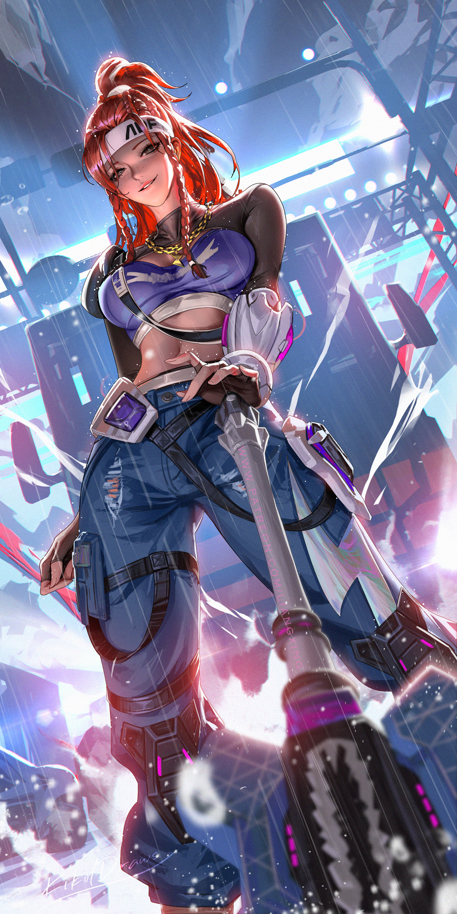

How to Play Brigitte
Brigitte is a very powerful Support in the right hands. While her kit may seem situational, intelligent practice can make her an "evergreen" hero pick capable of playing both with and against any team composition you'll find on the ranked ladder.
I have one-tricked Brig from Silver 4 to Grandmaster after picking her up for the first time in Season 2 of Overwatch 2. If I can climb, so can you.

1. The Fundamentals
Controlling Space, Not Feeding, Using Rally, & Protecting Your Other Support
2. Advanced Tech
Mind Games, Counterbashing, & Shield Bash Jumps
3. Counterplay
How to Counter Every Hero in the Game
4. Advice for Lower Ranked Players
Tips Specifically for Those Trying to Climb Out of the Metal Ranks
The Fundamentals
Brig is a hero centered around balance. There are times when Brig's best play is to engage on enemies close-range, swinging and bashing as aggressively as possible. There are times when Brig's best play is to stay far away from the enemy team and poke them with her Whipshot when possible. Neither course of action should be your sole playstyle for the duration of any given game, rather you should observe the state of the game and determine which is the greater benefit for your team in the given moment. A Brig who only plays close-range, swinging on any enemy they can find, will inevitably put themselves in a bad position, feed, and die. A Brig who only plays with long-range Whipshots might as well play another Support.
Brig's greatest asset as a Support is her ability to control and defend space on the map. Yes, the AOE healing from Inspire is great. Yes, the burst healing from her Repair Packs is great. Yes, Rally is a versatile and powerful Ultimate. None of these individual abilities are what make Brig so strong in virtually any team, they are all in service to her ability to control and defend space. So, what does this mean?
Controlling Space
Setting Up

Once you are in a strong position, you want to remain in/around that position for as long as you can without dying or until the game state has changed such that your position is no longer as strong as it was. As an example, on an Escort map such as Dorado, playing on the high ground highlighted in green is where you will often want to start when playing Defense. However, even if the enemy team is playing dive and you are repeatedly successful in keeping them off of this space, the nature of Escort means that the payload's progress will alter the game state even if it is far away from reaching the next checkpoint. On Dorado, the payload will eventually reach the choke of the archway, at which point you will often want to give up your position outlined in green to move closer to the area highlighted in blue. Through no fault of your own, the green space is now inherently less advantageous to control than the blue space and you must adapt accordingly. Furthermore, just because the green space has grown weaker, that does not mean that it won't return to being the stronger position later on in the match. If you move to the blue position and your team subsequently wins the fight and holds the choke, then you will likely want to set up for the next fight by returning to the green position. This concept of moving between areas of the map based on their immediate advantages and disadvantages is called rotation and is a key part of playing Overwatch as a whole. As Brig, you will want to identify areas that give you strong line-of-sight to where you anticipate the next fight will occur, and/or areas that would be advantageous for the enemy team to control, and rotate to and from those areas accordingly.
Dropping From High Ground
Outside of certain techs that let her abuse map geometry with Shield Bash, Brig has no vertical mobility whatsoever. When electing to drop from high ground to swing on the enemy team, keep in mind how difficult it will be for you to return to that high ground. Some high grounds, such as the tall buildings on the second point of Hollywood, are easy for Brig to access due to the elevators. Other high grounds, like the buildings overlooking the first point of King's Row, will take significantly longer for Brig to get to and may also put Brig in view of the enemy team, allowing them to kill you while rotating. If you are not confident that you can return to the high ground before the start of the next team fight, then reconsider dropping down.
Not Feeding
The advice any Support player will most often hear is to "play their life." Due to how powerful the Support role is, losing a Support early on can snowball into a lost team fight so not dying becomes central to the role's ethos. HOWEVER, the biggest mistake a Brig player can make with this advice is to play too passively. A Brig who focuses on "playing her life" will not seize opportunities to make game-winning plays for fear of dying. This is why I would not recommend prioritizing "playing your life" to aspiring Brig players. This does not mean that you should be cavalier about your deaths and start shield bashing directly into a full HP Reinhardt. This means not taking fights you KNOW you cannot win. When the enemy team sends their tank and two DPS after you, do not stay and fight as we both know you will lose and die. When there is a Ashe in your range who already used her Coach Gun, then go to her and kill her.
Tilting
Everyone in Overwatch gets tilted at some point. Maybe the enemy Hanzo just keeps hitting bullshit headshots, maybe your team is filing into the enemy's bullets conga line style and never regrouping, maybe there's another Pharmercy that your DPS cant seem to shoot. While it is normal to get tilted by these frustrating situations, the worst thing you can do as Brig is to get tilted into focusing a single enemy or believing you must solo carry the team to victory. If you get tilted by an enemy Hanzo, do not get tunnel vision and start running at the Hanzo in a blind rage as soon as you see him because no one on your team seems to be able to kill him. You will play worse, you will put yourself in a bad position, you will die, you will lose, and you will get even more tilted. By playing intelligently, you can turn around losing games. By letting the frustration dictate your playstyle, you will go on loss streaks.
I have a personal rule to log off for the day if I lose three games in a row, but you can come up with your own means of dealing with the urge to tilt-queue. Also, we all know that Overwatch comms can be toxic and that can be detrimental to the learning experience. Disabling these altogether can be good if you are the type of person who is easily upset.
- For voice chat, you can disable auto-joining your teams voice channel in Options→Sound→Voice Chat→Team Voice Chat: Off.
- For text chat, you can quickly hide the text chat UI by pressing Ctrl+Shift+C, or you can disable joining text chat altogether in Options→Social→Team Text Chat: Off.
Downtime
Don't be afraid of downtime. There will be moments during your matches when you are functionally doing nothing other than standing around. An impatient Brig player who uses this time to get more involved in a fight will die more often and die early, potentially losing your team a round or even the game. Sometimes, standing menacingly is the most valuable thing a Brig can do.
In the below example on Watchpoint: Gibraltar, you can see that I am essentially standing still in spawn for a solid 20 seconds at the start of the game . Since my team is taking opening spam damage, my job is just to sit back and toss packs until my Tank and DPS manage to get through to set up their own engagements.
Using Your Kit


As I'm sure you are aware, Brig has three primary aspects to her kit:
- Her Shield
- Her Repair Packs
- Her Whipshot
Before we discuss these parts of her kit in-depth, let's address a few things regarding her basic flail swing. First and foremost, you should always be swinging. If you are not playing in Masters+ lobbies then you should either be swinging or holding your shield up for the entire game, even if you are miles away from the enemy team. It's a good habit to get into, even if you don't see its value in every single match. You will occasionally clip enemy heroes who wander into your proximity or even spycheck a Sombra by doing this, which may seem like meager benefits, but the alternative is getting zero benefits at all. There is no reason to not swing your flail all the time, so swing your flail all the time.

Of note, Brig does not have a melee attack like most other heroes, instead her primary fire and her melee are functionally the same button, with both causing her to swing her flail when pressed. Crucially, however, while these inputs both do the same thing, they are still separate inputs. What I'm getting at here is a basic quality of life change I'd recommend you make. Brig's Shield Bash is triggered by pressing primary fire when her shield is up, meaning you are pressing M1 (left mouseclick) while holding M2 (right mouseclick). When you are in the heat of the battle, you will be pressing these two buttons constantly, and I am certain you have, at least a few times, made the mistake of Bashing when you didn't intend to because of this. If you have a mouse with additional buttons near your thumb then I would recommend remapping your controls on Brig so that melee is bound to M1 and primary fire is bound to M4 (M4/M5 are the two keys by the thumb on my mouse, though your mouse may differ slightly). Shield Bash only triggers when using primary fire, not when using melee, so you will never accidentally Bash again since your Bash is now tied to M4 and you can swing your flail as normal using M1 without worry.
Shield Management
Using the Third-Person Camera
Brig is part of a very limited roster of characters who can freely switch to a third-person perspective midgame. The third-person camera is incredibly important to Brig's kit, as it allows you to scout around corners and see threats you otherwise would not be able to see.
Shielding Teammates
Because Brig's shield is so flimsy and her only movement ability is directly tied to it not being broken, you have to be selective about using it to protect teammates. There are two primary scenarios in which I will deliberately stand in front of a teammate with my shield.
The first is when I am on maps with long sightlines such as Havana and am playing alongside characters like Ana, Ashe, or Widowmaker. At the start of the round, you can stand in front of those teammates to allow them to safely get early damage in and prevent them from being killed by a stray Widowmaker shot or Hanzo projectile. Since you yourself are far away from the action at this stage, you can sit in front of your teammate until your shield breaks, duck behind cover as soon as its broken, and then come back out to shield again once your shield has regenerated. You can loop this one or two times before you'll have to actually start playing the game properly. Try not to move too much while you are doing this, since your character model will obscure your teammate's view and they will move on their own to accommodate you standing in front of them.
The other scenario in which you should shield off your teammate is when the enemy Ana manages to land a Sleep Dart on one of your squishier teammates. Whenever this happens, if I am close enough then I will Bash on over and sit over their body with my shield up to prevent incoming damage or, more importantly, to block a follow-up Anti-Nade.
Any other applications of this technique you'll have to just play by ear. For example, though I would rarely consider shielding my Tank considering their large HP pools and defensive capabilities, there are times when your Tank will attempt to rotate out of heavy fire and just barely mistime their movement. In these scenarios, your shield could be the difference between them dying or making it to cover alive. You can also use shield to protect allies using stationary abilities, such as Mercy's Resurrection or Cassidy's Deadeye. Again, play it by ear.
One more niche example, in this fight my Genji popped his Blade and the enemy Cassidy countered with Deadeye to zone him out of using it. You can see that Genji actually used my shield to safely peek from cover to see if there were any safe angles to take here, and we both just backed up upon realizing there weren't any.
Using Rally
Rally is a powerful and versatile Ultimate that:
- Provides Brig with armor
- Provides allies with overhealth
- Restores your shield HP
- Expands your shield size
- Refreshes your Bash cooldown
- Gives your Bash a stun
That's a lot of effects for a single ability, however do not make the mistake of assuming Rally makes you invincible. 100 armor is nice but the enemy team can chew through it instantly if you give them the opportunity. While Rally does refresh your Bash cooldown, you do not always want to immediately bash in when you Rally. In fact the threat of the Bash stun is oftentimes the valuable part of the ultimate. For instance, one of the most common Ultimate interactions you'll have is using Rally to stun Reaper out of his Death Blossom. Good Reapers are well aware of the fact that you can and will stun them out of their Ult, so you can get a lot of value by using Rally and not bashing as your Rally provides your team with a guaranteed 10 second window where the enemy Reaper cannot use his Ult or else risk the easy stun. 10 seconds is a very long time in Overwatch, so by reading the fight correctly and understanding when an enemy Reaper will want to Ult, you can completely ruin his window of opportunity, and that can be enough to win a whole game.
Brig's stun can also shut down a ton of other Ultimates with careful timing. The Ultimates that you can cancel can be broadly grouped into three categories:
To understand why this all works, you must first understand the keywords that Overwatch uses to define how abilities interact with the player character's state machine. All abilities in Overwatch, including Ultimates, are activated in one of three ways: Channelling, Transforming, or Casting.
Channelled abilities are abilities that change the character's default state while active. For example, Brig's Shield ability is a Channelled ability because Brig goes from the default standing state (Fig. 1 below) to the shielding state (Fig. 2) with each state having separate actions available to them. Crucially, channelled abilities can be interrupted by crowd control abilities such as stuns or hacks, which will force the character back into their default state (e.g. if Brig is stunned while she has her shield up, she will forcibly drop shield and return to the neutral, standing state).

Transformation abilities are similar to Channelled abilities, however Transformation abilities only last for a set duration and cannot be interrupted by crowd control abilities. Brig's Rally is a Transformation ability, however if you are having trouble visualizing this concept, an easier example would be Winston's Primal Rage. Both Rally and Primal Rage only last for a set duration and cannot be prematurely ended through being slept, hindered, or otherwise stunned; as long as the ability's duration has not expired, the Transformation will still be active upon recovering from the sleep/hinder/stun/etc.
Casted abilities take place across two stages. The initial stage, the casting stage, begins as soon as the relevant input is pressed. The casting stage lasts until specific conditions are met, after which the casting stage will automatically end, the ability will be activated, and the character will enter a recovery stage for a set duration of time. For example, Lúcio's Sound Barrier is a Casted ability. As you are likely aware, when you use your Ultimate as Lúcio, the overhealth it provides does not apply immediately. Assuming Lúcio is standing on the ground when the player presses their Ultimate input, he will spend ~0.7 seconds casting the Ultimate, after which point the overhealth will be applied to all allies in range and Lúcio will enter a ~0.8 second recovery stage wherein he cannot use his normal abilities before returning to his neutral state. For our purposes, the most important property of Casted abilities is that they can be interrupted during the casting stage but cannot be interrupted afterwards (e.g. if Brig uses her Rally Bash to stun Lúcio while he is casting his Ultimate, the ability is canceled and and the overhealth is never applied. However, if she uses Rally Bash after the overhealth is applied, the stun does not undo the overhealth).
This may seem like an overly technical breakdown, but it's important to understand why things happen (both in Overwatch and in life). Now that we know all of this information, we can return to the three categories of Ultimates that Rally can cancel.
Ultimates you can reliably cancel include any Channelled or Casted Ultimate that Brig is likely to be within Bash range of, such as Reaper's Death Blossom or Moira's Coalescence.
Ultimates you can cancel by predicting are exclusively Casted Ultimates. These Ultimates have very narrow casting stages, so narrow that you likely do not have the reaction speed necessary to Rally and then Bash before the casting stage ends. As such, if you want to cancel these Ultimates, you have to anticipate their use, Rally prematurely, and Bash during the cast time. This is very satisfying to do, but comes with the risk of wasting your Rally if you misjudge the situation.
Ultimates you can theoretically cancel but realistically will rarely be in the right circumstance to include any Channelled or Casted Ultimate that Brig is not likely to be within Bash range of (e.g. Pharah's Barrage, a Channelled Ultimate that is usually activated in the sky, or Junkrat's Rip-Tire, a Casted Ultimate which is usually cast behind cover).
Note that this only applies to interrupting the enemy's Ultimate, not blocking the enemy Ultimate. It is difficult to stun Reinhardt out of his Shatter entirely due to its narrow cast time, however it is very easy to block his Shatter from hitting you or allies behind you due to the effect's reactably slow movement speed. As this does not require Rally to do, these kinds of Ultimate interactions are addressed in the hero-specific Counterplay section below.
A Brief Note on Perks
At the time of writing, Brig's Perks are all quite good. You can't really go wrong picking any of them, though there are definitely arguments to be made for the case of an "optimal build." You should choose your Minor Perk based on the environment of the game you're in; if you are against a more brawl-heavy team and aren't able to get too close to the action then her Right Minor Perk (Morale Boost) can compensate for your limited engagements by extending your Inspire uptime. Conversely, if you are playing against a dive-heavy team and are spending a lot of time fending off flankers then her Left Minor Perk (Combat Medic) lets you chuck Repair Packs with ridiculous frequency.
Her Major Perk is less of a discussion because the majority of Brig players will tell you that her Left Major Perk (Inspiring Strike) is by far the better option. It adds even more utility to Shield Bash, giving you additional movement speed equivalent to Junker Queen's Shout while also making you better in brawls and 1v1 duels by changing the Inspire triggered from Bashing from healing-over-time into burst healing. This means that hitting an enemy with Shield Bash now instantly heals you and any allies in range for 60HP a piece, which is on par with Baptiste's Regenerative Burst. Not only that, this burst healing stacks with your existing Inspire rather than resetting it. If you are in the middle of a brawl, weaving in Bashes and flail swings, then you will constantly be healing for 15HP a second with a 60HP burst heal on a 5 second cooldown. Your healing numbers will skyrocket and flankers will have an extremely hard time killing you or any teammates near you.
However, you will have to pry Whiplash from my cold dead hands.
Whiplash, Brig's Right Major Perk, is so unbelievably fun to use. It's a simple effect: if your Whipshot knocks an enemy into a wall then they will take an additional 50 damage. Before we get into my competitive argument for using it, I could recommend running Whiplash over Inspiring Strike for the dopamine hits alone. Whipping enemies into walls never gets old, and most clipworthy POTGs I've gotten involve this Perk in some capacity. This is not to mention how much Whiplash affects your matchup against Tracer. I go over this in more detail in the Counterplay section later on, but Brig's greatest strength against Tracer is the fact that Whipshot's damage chunks 40% of Tracer's health bar and thus forces her Recall. With Whiplash, a successful Whipshot takes 70% of Tracer's HP, which absolutely cripples her ability to engage if it doesn't outright kill her. If we want to get down to brass tacks, this leads me into the actual reason to run this Perk beyond the fun of doing so.
Whiplash changes breakpoints.
Breakpoints in Overwatch are the thresholds that define how easily one character can kill another. If you've ever wondered why Blizzard's Patch Notes involve tweaking numbers by such small amounts, like how Tracer's damage per bullet has been changed from 5 to 6 to 5.5 and back on multiple occasions, breakpoints are the reason why. For a Brig-specific example, let's look back at Season 7 of Overwatch 2. Included with the October 10 Patch Notes was a small buff to Brig, increasing her Whipshot damage from 70 to 80. At the time, Brig's flail did 35 damage per swing and her Bash did 50. Prior to the Season 7 buff, it took three swings (105) + Bash (50) + Whipshot (70) to kill a 200HP enemy in the 1v1. That's a pretty long time-to-kill. After the buff, it instead took two swings (70) + Bash (50) + Whipshot (80) to reach the same damage threshold, shaving 0.6 seconds off of this combo. All of a sudden, Brig had a much easier time running down DPS heroes like Sojourn, Ashe, and Genji (who were all 200HP heroes at the time) and you could play extremely aggressively because a lot of heroes lost the 1v1 against you. Playing Brig during this period was a ton of fun, all on the back of a tiny 10 damage buff. By the end of Season 7, Blizzard reverted this change and Whipshot remains at 70 damage to this day.
But the key takeaway here isn't just how important breakpoints are to game balance. Something I observed during Season 7 was that players on Sojourn and similar heroes who previously had a favorable matchup against Brig in the 1v1 were staying in those 1v1s for longer than they should have. Players love to mix-max their value, to stay in for as long as they can and do as much as they can before escaping with just enough time and health to live. Identifying just how long you can safely fight before having to disengage is muscle memory for anyone who plays the game beyond the purely casual level. Changing breakpoints ruins that muscle memory. To bring us back to Perks, it actually works in the favor of off-meta gremlins like myself that Inspiring Strike is widely considered the more intrinsically valuable Perk because players at the higher ranks expect me to take it. Much like in Season 7, the enemy Sojourn is far more likely to stay in place for too long when they don't expect a surprise 50 damage that changes Brig's kill combo from two swings (90) + Bash (70) + Whipshot (70) to one swing (45) + Bash (70) + Whipshot (70) + Whiplash (50). The value of disrupting the enemy's muscle memory isn't as obvious as the value provided by Inspiring Strike, however in practice Whiplash has helped me to plenty wins and there are very few games where I don't take it.
This is an uncommon stance, so feel free to take Inspiring Strike if it better suits your playstyle.
Playing With Your Tank
This is an aspect of Overwatch that is overlooked at all ranks but especially at the lower ranks. Your tank sets the tempo of your team's engagements. If you are playing with an extremely aggressive Tank, like a Reinhardt or Doom that just keeps going in, play at their tempo. Play aggressively with them, not necessarily frontlining but definitely not standing on the objective and wondering why your Tank is feeding. And speaking of the objective...
Standing on the Objective
Overwatch is an objective-based game, so players often assume this means that they should be standing on the objective as often as possible. The issue is, everyone assumes this which means players from Bronze to Diamond will stack the whole team on the objective and allow the enemy team to freely take map space. In the case of payload-based map types like Hybrid or Escort, only one person needs to be on the objective to progress your team to a win. In the KotH Control and Flashpoint maps, no one needs to be standing on the objective once your team has control of it. In higher ranks and professional play, this is referred to as the "defender's advantage"; the team in control of the point does not need to be on it, however the team trying to take the point from them does need to be on it, especially as the clock ticks down. This restricts the attacking team's ability to move and allows the defending team to more freely exercise map control.
You'll notice the commonality here is map control. This is why the first section of this guide is about Brig's ability to control space and why I believe Brig is viable just about everywhere. Overwatch is an objective-based game, yes, but winning in Overwatch is based on map control, even if you do not consciously recognize this. The more of the map your team can hold and deny from the enemy team, the higher your team's chances of winning are.
Does this mean you should never stand on the objective? No. As stated, only one person needs to push the objective and sometimes that person is you. On maps with less easily-accessible high ground such as King's Row, I will often be the one emoting on the payload while the rest of my team pushes forward to take space. Conversely, on maps with valuable high ground such as Watchpoint: Gibraltar, I will almost never touch the payload for the entire game. Simply put, it is not my job. At higher ranks people are aware of this, however if you are playing in the metal ranks then your team will likely be a little annoyed that you aren't touching the payload. If they get mad at you, ignore them. I never intentionally try to piss off my team, but it is better to win while your team is a little mad at you than to lose because you acquiesced to their demands that you sit on point. To make things easy for you, these are the maps where I usually elect to be the one pushing the payload:
I will note an exception to this rule, which is when you are in overtime. If you are in comms with your team then you can safely play off the payload if your teammates call out who is on or planning on staying on for the push. It is still better for your team for you to not be on payload, however, if you are solo queueing in silence then I frankly would not risk getting off in overtime. It's far too easy for everyone to assume someone else will push and then you c9 for no reason. Brig is actually a fairly strong payload pusher in overtime anyway; the payload itself heals players around it for 5HP a second, which isn't a lot on its own but during overtime you can consider this to be a small buff to your Inspire. The payload also provides a small amount of cover from incoming fire, so weaving in your shield usage with ducking behind the payload lets you stay alive with an intact shield for quite a while.
One last important note, whenever you are on the payload for any reason, do not actually stand on the payload, stand next to it. You are easier to hit when you are just standing on top of it, you cannot use the payload for cover when you are on top of it, and any Ultimate that affects the floor of the map, like Reinhardt's Shatter or Venture's Tectonic Shock, will go under the payload and ignore your shield when you are on top of it.
Protecting Your Other Support
An oft-cited part of Brig's hero fantasy is the role of bodyguard. The archetypal anti-dive Support line consisting of Brig & Ana is the most obvious example of this. When faced with a Wrecking Ball, Winston, Tracer, or Genji looking for backline picks, Brig's job is to stay close enough to Ana that the two can work together to repel or even kill these divers. As strong as Brig is in this specific scenario, when you are solo queueing on ladder you will often be alongside players who can't or don't want to play Ana, and you will often play alongside Supports that synergize poorly with Brig. This is completely fine, flaming your other Support for playing whatever hero they decide on will not help you win games (and as an OTP I have no room to complain anyway). Instead, approach these games with a more proactive mindset to identify where you can cover your team's weak spots and where you can embolden your team's strengths. It is entirely possible to win games at any rank even with a Brig/Mercy backline.
Counterplay
A lot of Brig's ability to shut down other heroes, especially those that counter her, will lie in the player's ability to ult track. This does not have to be a perfected skill for the vast majority of Brig players, it is enough to just think generally between fights as to whether an enemy has their Ultimate or not. You will guess wrong sometimes and that's fine. You will guess right sometimes and be rewarded.